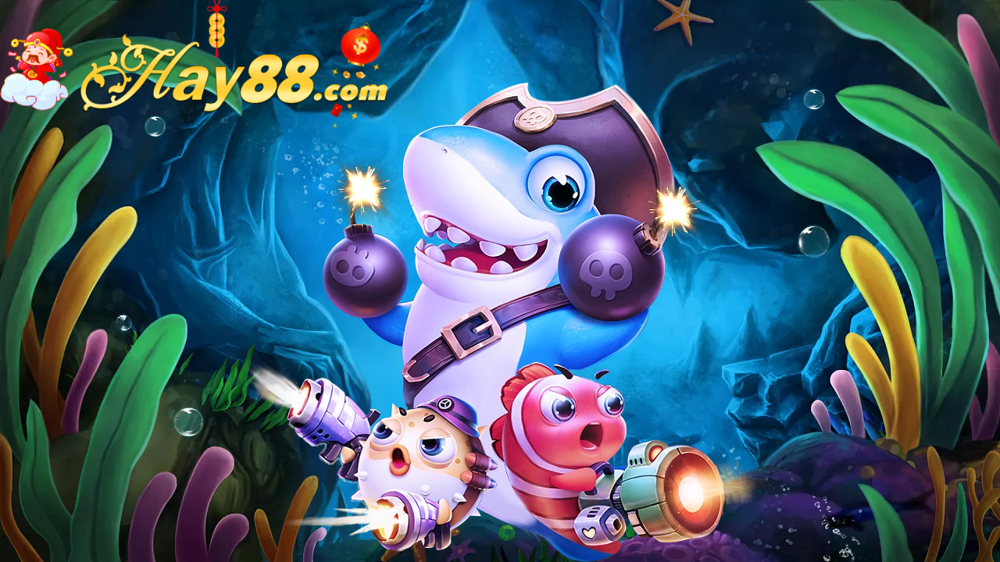

Bắn cá là trò chơi khá phổ biến trong các trung tâm giải trí. Người chơi sẽ sử dụng các máy bắn cá cổ điển và điều khiển súng để nhắm đúng mục tiêu. Ngày nay xã hội ngày càng phát triển với công nghệ 4.0 game bắn cá online HAY88 ra đời. Người chơi sẽ sử dụng điện thoại thông minh hay máy tính để chơi bắn cá trực tuyến. Người chơi sẽ sử dụng các vũ khí trong trò chơi để tiêu diệt những chú cá ảo xuất hiện trong trò chơi. Mỗi lần tiêu diệt được mục tiêu sẽ nhận được xu hoặc phần thưởng từ nhà cái. Sau khi giành chiến thắng người chơi có thể rút tiền thưởng từ nhà cái thông qua ngân hàng hoặc thẻ cào.
Để tham gia trải nghiệm game bắn cá online HAY88 tại các nhà cái thì việc đầu tiên anh em cần lựa chọn cho mình một nhà cái uy tín để tham gia. Sau đó anh em sẽ lần lượt thực hiện các bước sau:
Bước 1: Chọn đăng nhập và đăng ký tài khoản. Các bạn cần tiến hành đăng nhập vào website HAY88 của nhà cái mà mình đã chọn để đăng ký tài khoản. Các bạn chỉ cần thực hiện những thao tác theo hướng dẫn của hệ thống để đăng ký tài khoản cho mình.
Bước 2: Chọn chơi game bắn cá online. Sau khi đăng ký tài khoản thành công bạn hãy nạp tiền vào tài khoản và tiến hành chơi
Bước 3: Lựa chọn mức chơi phù hợp với mức xu mà mình có.
Bước 4: Lựa chọn vũ khí phù hợp với mức xu mình có. Độ mạnh của loại đạn mà bạn bắn ra tỷ lệ thuận với với hạ gục các loài cá nhanh hay chậm. Các chú cá mà bạn hạ gục sẽ mang về cho bạn một phần thưởng từ nhà cái. Phần thưởng to hay nhỏ phụ thuộc vào loài cá mà bạn hạ gục. Phần thưởng càng lớn mục tiêu cá bạn cần hạ gục càng khó.
Bắn cá online HAY88 là một trò chơi đòi hỏi người chơi cần có sự khéo léo và tính toán. Chính vì vậy, khi chơi ngoài yếu tố may mắn thì người chơi cần có chiến thuật phù hợp và những mèo chơi để có thể hạ gục mục tiêu một cách nhanh nhất và hiệu quả nhất.
Khi chơi bắn cá anh em cần phải lựa chọn loại đạn phù hợp với loại cá để tránh lãng phí đạn và nhanh chóng hạ gục được mục tiêu. Bởi mỗi loại đạn sẽ tương ứng với các mục tiêu các loài cá khác nhau. Đây chính là chiến thuật giúp người chơi trăm trận trăm thắng. Tùy thuộc vào từng loài cá xuất hiện trong trò chơi mà người chơi sử dụng các loại đạn khác nhau. Đạn nhỏ dùng để tiêu diệt cá nhỏ, đạn mạnh để tiêu diệt cá mạnh. Đây cũng là cách giúp người chơi không lãng phí đạn.
Với những đàn cá khi mới xuất hiện trong bàn chơi là những đàn cá dễ hạ gục, bạn có thể tiết kiệm được đạn và tích lũy được kinh nghiệm. Anh em hãy hướng súng bắn vào góc màn hình để hạ gục những đàn cá khi mới xuất hiện và tăng cơ hội nhận thưởng từ các chú cá bị hạ gục.
Khi bạn trong bàn chơi bắn cá bạn cần áp dụng các chiến thuật hợp lý cho từng tình huống. Trong mỗi tình huống khác nhau bạn sẽ áp dụng chiến thuật nhả đạn khác nhau sao cho hợp lý. Những chiến thuật thường được các cao thủ sử dụng và có hiệu quả cao đó là: Chiến thuật bắn tỉa, bắn cá đơn lẻ, bắn cá theo đàn, tăng dần mức độ đạn,…